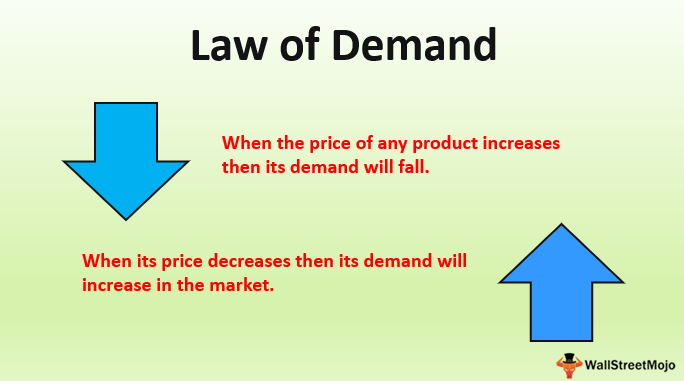

supply is the amount of a resource that firms, producers, labourers, providers of financial assets, or other economic agents are willing and able to provide to the marketplace or directly to another agent in the marketplace.
Market Supply- Being suppllyed from the market
Short-term Supply- Being provided within a short period of time
Long-term Supply- Being provided over a large period of time
Joint Supply-Joint supply is an economic term referring to a product or process that can yield two or more outputs
Composite Supply- Composite supply means a supply is comprising two or more goods/services, which are naturally bundled and supplied in with each other in the ordinary course of business
demand is the quantity of a good that consumers are willing and able to purchase at various prices during a given period of time. The relationship between price and quantity demanded is also called the demand curve.
Joint demand
Composite demand
Price demand
Income demand
The law of demand states that when the supply of a particular object is high it's demandwill be low, likewise when an object's supply is very low it's demand will be very high
Supply refers to the amount of goods that are available. ... At some point, too much of a demand for the product will cause the supply to diminish. As a result, prices will rise. The product will then become too expensive, demand will go down at that price and the price will fall
